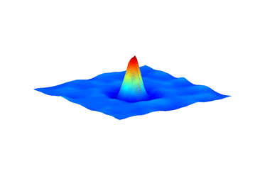

To know the road ahead, ask those coming back.
|  |
ElectroMagnetic PDE in QM
\( i\hbar\partial_t \psi=-\frac{\hbar^2}{2m}\nabla_A^2 {\psi}+V_e\psi+\mathcal{N} \psi \) The universe is written in the language of mathematics (Galileo) "Imagination is more important than knowledge." "Do not worry about your difficulties in Mathematics. I can assure you mine are still greater." "Equations are more important to me, because politics is for the present, but an equation is something for eternity." (Albert Einstein) |
| Class schedule by chapters/sections [Strauss/Evans/Lecture Notes] (tentative) | |||
|---|---|---|---|
| PDEs from physics (Chapter 1) | 1.1 - 1.6 | ||
| *Separation of variables, Boundary Problems (Chapter 4) | 4.1-4.2,4.3* | ||
| Fourier series (Chapter 5) | 5.1-5.6 | ||
| Laplace Equations (Chapter 6) | 6.1 - 6.3, 6.4* | ||
| Exam 1 | Chapter 5 and 6 | ||
| *Greens functions (Chapter 7) | 7.1*-7.4* | ||
| Computation of Solutions (Chapter 8) | 8.1* - 8.5* | ||
| Waves in Space* (Wave, Diffusion, Schrödinger) | 9.1*, 9.4*,9.5* | ||
| **Boundaries in the plane and in space | 10.1*-10.7* | ||
| *General Eigenvalue Problems | 11.1*-11.6* | ||
| Exam 2 | Exam 2, Chapters 7, 8 and part of 9, 10 | ||
| Distributions and Fourier Transforms | 12.1-12.4, 12.5** | ||
| Weak derivatives and Sobolev spaces (Evans, Chapter 5) | 12.1-12.4, 12.5** | ||
| Second-order elliptic equations, regularity, maximal principles and Harnack's inequality (Evans, Chapter 6) | 12.1-12.4, 12.5** | ||
| Nonlinear PDEs, calculus of variations | 14.1*-14.5* | ||
| Numerical methods** |
heat, wave, Schrödinger (lecture notes) |
||
| Review | Exam | Date |
|---|---|---|
| Review Exam I | Exam I | Feb. 28 |
| Review Exam II | Exam II | |
| Review Exam III | Exam III | |
| Review Final | Final Exam | May 4, Wedn 12:30-2:30 |
Green's theorem 2d: $$\int_{\partial R}{\bf F}\cdot {\bf n} ds=\int_R\, \mathrm{div}\, {\bf F}\, dA$$
The divergence theorem in 3d (Gauss' theorem): \begin{align} &\int_{\partial\Omega}{\bf F}\cdot {\bf n} d\omega=\int_\Omega \mathrm{div} {\bf F} dV \end{align}
The relativistic Dirac Equation with \(\frac12\)-spin: \(i \hbar\partial_t\psi = c{\bf \alpha}\widehat{{\bf p}}\psi +\beta mc^2 \psi\)
\(\frac{u(x+h,y)-2u(x,y)+u(x-h,y)}{h^2}+\frac{u(x,y+k)-2u(x,y)+u(x,y-k)}{k^2}=f(x,y) \) |
matrix for 2D laplacian \(\Delta u=f\) \( \begin{bmatrix} 4 &-1 & 0 & -1 & 0 & 0 & 0 & 0 &0 \\ -1 &4 &-1 & 0 &-1 & 0 & 0 & 0 &0 \\ 0 &-1 &4 & 0 & 0 & -1 &0 & 0 &0 \\ -1 &0 &0 & 4 &-1 & 0 &-1 & 0 &0\\ 0 &-1 &0 &-1 &4 &-1 &0 &-1 &0\\ 0 &0 &-1 &0 &-1 &4 &0 &0 &-1\\ 0 &0 &0 &-1 &0 &0 &4 &-1 &0\\ 0 &0 &0 &0 &-1 &0 &-1 &4 &-1\\ 0 &0 &0 &0 &0 &-1 &0 &-1 &4 \end{bmatrix} \) Finite difference time splitting fourier pseudo-spectral method or imaginary time evolution computing rotating GPE quantum anharmonic oscillator |